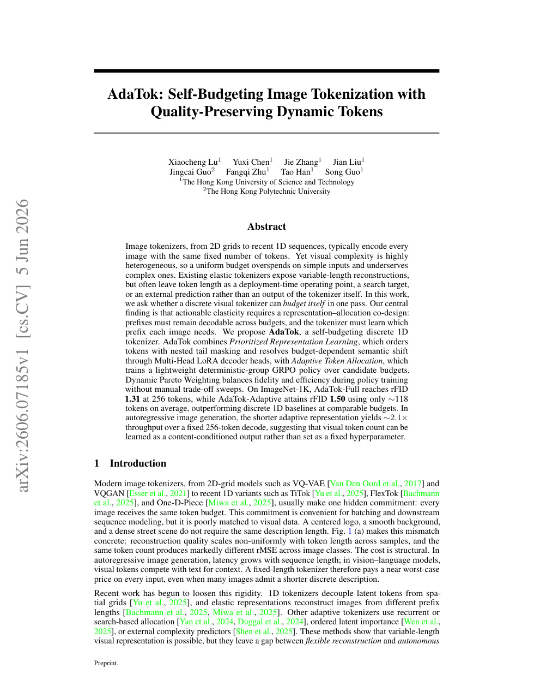

今日主线 · arXiv 新增
AdaTok：把离散 1D image tokenizer 的 token budget 学成内容条件输出，连接 visual tokenization、latent compression 和 AR image generation
把离散 1D image tokenizer 的 token budget 学成内容条件输出，连接 visual tokenization、latent compression 和 AR image generation。
